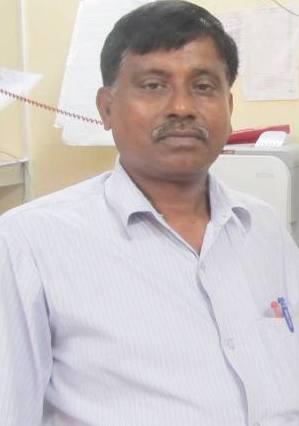

Dr. K. D. Mandal

About Me
I received B.Sc (Chem. Hons.1979) and M.Sc (Chemistry) degree from Bhagalpur University (1981) and Ph.D in Chemistry from Banaras Hindu University, varanasi (1989). After getting Ph. D . I joined postdoctoral fellow (Research Associate CSIR) in School of Materials Science and Technology, Institute of Technology, BHU in June 1990 and worked till June 1995. I joined as a Lecturer in Chemistry at North Eastern Regional Institute of Science and Technology(NERIST), Itanagar, Arunachal Pradesh in 1995 after serving nine years at NERIST, I was shifted to Institute of technology presently known as Indian Institute of technology, Banaras Hindu University in 2004 and promoted to Reader (2005) and Associate Professor (2008). His current research interests include synthesis, characterization and applications of nano-materials, oxide based electroceramics and graphene-based composites for energy storage devices.
Recent Publications
- Comparative Dielectric Studies of Nanostructured BaTiO3, CaCu3Ti4O12 and 0.5BaTiO3·0.5CaCu3Ti4O12 Nano-composites Synthesized by Modified Sol-gel and Solid State Methods, Laxman Singh , U.S. Rai and K. D. Mandal Youngil Lee, Materials Characterization 96 (2014) 54-62
- An Overview on recent Developments in the Synthesis, Characterization and Properties of High Dielectric Constant Calcium Copper Titanate Nano-particles U.S.Rai , Laxman Singh , K.D.Mandal and Narsingh B. Singh Nanoscience and Technology 1 (2), 2014, 1-17 ( Published online 2014)
- An Insight into Particle Size and Strain Analysis of Y2/3Cu3Ti4O12 (YCTO) sample by XRD Sunita Sharma and K. D. Mandal INROADS 3 (2014) 31-34
- Progress in perovskite functional dielectric material CaCu3Ti4O12 Laxman Singh , U.S. Rai , K.D.Mandal and N. B. Singh Progress in Crystal Growth and Characterization of Materials 60 (2014) 15-62
- AC impedance, modulus studies on 0.5BaTiO3·0.5CaCu3Ti4O12 nano-composite Laxman Singh, U. S. Rai, K. D. Mandal , Byung Cheol Sin, Sang-Ick Lee and Youngil Lee
- Ceramic International40 (2014) 10073-10083Effect of site selection on dielectric properties of Fe doped CaCu3Ti4O12 electro-ceramic synthesized by citrate nitrate gel route Laxman Singh ,K. D. Mandal , U.S. Rai and Alok Kumar Rai
- Indian Journal of Physics 88 (2014) 665-670 Tribological studies of Stearic acid-modified CaCu2.9Zn0.1Ti4O12 nanoparticles as effective zero SAPS antiwear lubricant additives in paraffin oil V. Jaiswal, R. B. Rastogi, R. Kumar, Laxman Singh and K. D. Mandal J. Materials Chemistry A, 2 (2014) 375-386
- Effects of Praseodymium Substitution on Electrical Properties of CaCu3Ti4O12 Ceramics Alok Kumar Rai, Jihyeon Gim , Eui-chol Shin, Hyun-HoSeo, Vinod Mathew, K. D. Mandal , Om Parkash, Jong-Sook Lee, Jaekook Kim Ceramic International,40 (2014) 181-189
- Dielectric behavior of CaCu3Ti4O12 electro-ceramic doped with La, Mn, and Ni synthesized by modified citrate-gel route, K. D. Mandal, Laxman Singh, Alok Kumar Rai and U. S. Rai J. Advanced Ceramics 2 (2013) 119-127.
- Dielectric Properties of Zinc Doped Nanocrystalline Calcium Copper Titanate synthesized by Different Approach Laxman Singh, U.S. Rai andK. D. Mandal Materials Research Bulletin 48 (2013) 2117-2122
- Dielectric and ac impedance studies of Ultra-fine CaCu3Ti3.90Ce0.10O12 perovskite synthesized by citrate-gel route K.D. Mandal , Laxman Singh , Sunita Sharma , U. S. Rai and M. M. Singh J. Sol-gel Science & Technology 66 (2013) 50-58.
- Effects of sintering duration on microstructure and dielectric properties of Zn doped CaCu3Ti4O12 synthesized by semi -wet route Laxman Singh, U. S. Rai, Alok Kumar Rai and K. D. Mandal Electronic Material Letters9 (2013) 107-113
- Dielectric, Modulus and Impedance spectroscopic studies of nanostructured CaCu2.70Mg0.30Ti4O12 electro-ceramic synthesized by modified sol-gel route Laxman Singh, U.S. Rai and K. D. Mandal J. Alloys & Compounds555 (2013) 176-183
- Effect of processing routes on microstructure, electrical and dielectric behaviour of Mg doped CaCu3Ti4O12 electro-ceramic Laxman Singha, U.S. Raia, K. D. Mandalb* and Alok Kumar Raic J. Applied Phys. A112 (2013) 891-900
- Effect of Tantalum Substitutions on Microstructures and Dielectric Properties of Calcium Copper Titanate (CaCu3Ti4O12) Ceramic Alok Kumar Rai, Nitish Kumar Singh, Susant Kumar Acharya, Laxman Singh and K. D. Mandal Materials Sci. Engg. B,177 (2012) 1207-1212.
- Dielectric properties of CaCu2.9Co0.1Ti4O12 and CaCu3Ti3.9Co0.1O12 ceramics synthesized by semi-wet route K. D. Mandal , Alok Kumar Rai, Laxman Singh and Om Parkash Bulletin of Mater. Sci.,35 (2012) 433-438
- Influence of Zn-doping on the Microstructures and Dielectric Properties in CaCu3Ti4O12 Ceramic Synthesized by Semi-wet route Laxman Singha, U.S. Raia and K.D.Mandalb* Advances in Applied Ceramics111 (2012) 374-380
- DIELECTRIC PROPERTIES OF ULTRAFINE Zn-DOPED CaCu3Ti4O12 CERAMIC LAXMAN SINGH, U. S. RAI, K. D. MANDAL and MADHU YASHPAL J. Advanced Dielectrics,2 (2012) 1250007 (6 pages)
- Preparation and Characterization of Nanostructured CaCu2.90Zn0.10Ti4O12 Ceramic Laxman Singh, U. S. Rai and K. D. Mandal, Nanomater. nanotechnol.01 No. 2 , (2011) 59-66 (ISSN 1847-9804)
- Dielectric Properties of iron doped calcium copper titanate CaCu2.9Fe0.1Ti4O12 K. D. Mandal, Alok Kumar Rai, Sang- Kwon. Lee, N. K. Singh, D. Kumar and Om Parkash,J. Alloys and Compounds,509 (2011) 8901-8906
- Dielectric Properties of iron doped calcium copper titanate CaCu3Ti3.9Fe0.1O12 K. D. Mandal, Alok Kumar Rai, Sang-Kwon Lee, N. K. Singh, D. Kumar and Om Parkash,J. Mater. Sci.: Materials in Electronics,22 (2011) 1286-1289
- Dielectric Properties of CaCu3Ti4-xCoxO12 (x = 0.10, 0.20, 0.30) synthesized by Semi -wet route K. D. Mandal, Alok Kumar Rai, D. Kumar and Om Parkash Materials Chemistry and Physics122 ( 2010 ) 217-223.
- Dielectric properties of CaCu3-xNixTi4O12 and CaCu3Ti4-xNixO12 (x =0.10) synthesized by Semi-wet route K. D. Mandal, Alok Kumar Rai, D. Kumar and Om Parkash J. Alloys and Compounds, 491 (2010) 507-512.
- Characterization of Ca1-xLaxCu3Ti4O12 Synthesized by Semi-wet route K. D. Mandal, Alok Kumar Rai, D. Kumar and Om Parkash J. Phy. & Chem. Solids ,70 (2009) 834-839
- Dielectric properties of the Ca1-xLaxCu3Ti4-xCoxO12 system (x = 0.10, 0.20 and 0.30) synthesized by Semi-wet Route K. D. Mandal, Alok Kumar Rai, D. Kumar and Om Parkash J. Alloys and Compounds,478 (2009) 771-776 26. Synthesis and Characterization of Ultra fine Barium Calcium Titanate, Barium Strontium Titanate and Ba1-2xCaxSrxTiO3 (x = 0.05, 0.10) Alok Kumar Rai, K. N. Rao, Vinoth Kumar. L and K. D. MandalJ. Alloys and Compounds,475 (2009) 316-320.
Academic Profile
-
Academic Profile
- Ph.D. Banaras Hindu University [1989]
- M.Sc.: Bhagalpur University [1983]
-
Professional Profile
- Associate Professor: Insitute of Technology - BHU [2008 - till date]
- Reader: Insitute of Technology - BHU [2005 - 2008]
- Lecturer: Insitute of Technology - BHU [2004 - 2005]
- Lecturer & Sr. Lecturer: Department of Chemistry, NERIST, Itanagar [1995 - 2004]
Research Interests
- Our research is involved with the synthesis and characterization of oxide-based electroceramics. The properties and applications of many electroceramics depend on the close control of the crystal structure, composition, ceramic microstructure, dopant and dopant (or defect) distribution. Materials of well-defined composition are synthesized by using different chemical routes and characterized by a variety of studies like X-ray powder diffraction (XRD), Scanning Electron Microscopy (SEM), Transmission Electron Microscopy (TEM), Energy Dispersive X-ray Spectroscopy (EDX), FTIR, analytical and thermal techniques (TGA/DTA) and X-ray Photoelectron Spectroscopy (XPS). The electrical and dielectric properties are usually characterized by AC Impedance spectroscopy and Electrometer with variation of frequency and temperature.
Area of Research
- Nano-materials
- Materials Chemistry
- Electronic Ceramics
- Solid State Chemistry
Awards and Honours
- To be updated...
Contact Me
- kdmandal.apc@iitbhu.ac.in
- 0542 - 670 2868
7607170786 - Department of Chemistry Indian Institute of Technology (Banaras Hindu University) Varanasi - 221 005